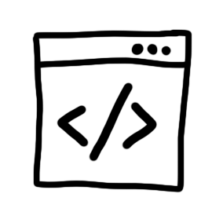
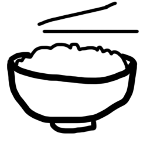

Lucie Ehrsam est une jeune femme d'une nature assez timide née en 2004. Elle est une ancienne membre de l'escadron d'élite du G3 de la promo 2026 à l'IIM. Actuellement en année 2 elle se destine grâce à ses nombreuses capacités et qualités à une carrière dans les milieux du code et de l'innovation digital.
Lucie Ehrsam
Ses passions
Le code
Lorsque Lucie a découvert le code elle a découvert un nouveau monde créatif et surtout une passion. Son domaine de prédilection est le front-end elle possède un tallent pour le CSS qu'elle affectionne tout particulièrement.

Le dessin
Lucie est dotée d'un grand côté créatif qu'elle sait très bien illustrer de ses mains. Elle partage sa passion en étant membre de l'association Léon’Art. Donnez-lui un crayon et vous pourriez être impressionné.
Son projet
Fujian
Fujian est le projet de fin d'année préparatoire de Lucie. Ce site de restauration asiatique est la concrétisation de plusieurs jours de réflexions et de travail. Ce qui lui a permis de démontrer ses compétences telles que : HTML, CSS, JAVASCRIPT, PHP.

